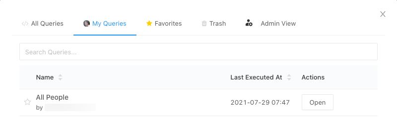

Query tasks
Run your first query
When you log in to Databricks SQL for the first time, an onboarding panel appears to help you get started quickly. If you are not an administrator, running your first query is the first onboarding task.
Note
If you have dismissed the onboarding panel, run this query by following the steps in Create a query in SQL editor later in this article.
If you don’t see the onboarding panel, look for Tasks Completed in the sidebar, and click it.
In the onboarding panel, click Run your first query. The SQL editor appears, loaded with the following query in the query pane:
-- We've given you a sample query below to help get started. -- Just hit "Run" to run the query and get your results. SELECT concat(pickup_zip, '-', dropoff_zip) as route, AVG(fare_amount) as average_fare FROM `samples`.`nyctaxi`.`trips` GROUP BY 1 ORDER BY 2 DESC LIMIT 1000
This query runs against the
nyctaxidatabase in theSAMPLEScatalog, which is readable in all workspaces.Tip
Limit 1000 is selected by default for all queries to ensure that the query returns at most 1000 rows. If a query is saved with the Limit 1000 setting, this setting applies to all executions of the query (including within dashboards). It is not limited to the context of the editor session. If you want to return all rows for this query, you can unselect LIMIT 1000 by clicking the Run (1000) drop-down. If you want to specify a different limit on the number of rows, you can add a
LIMITclause in your query with a value of your choice.Click Run (1000). After a few seconds, the query results are shown below the query in the results pane.

Click Save.
In the Save query dialog box, click Save (change the query name to a name of your choice).
Important
When you modify a query but don’t explicitly click Save, that state is retained as a query draft. Query drafts are retained for 30 days. After 30 days, query drafts are automatically deleted. To retain your changes, you must explicitly save them.
View and organize queries
Queries can be viewed in one of two ways:
New queries can now be viewed in the workspace browser by clicking
 Workspace in the sidebar. These queries are viewable, by default, in the Home folder. Users can organize queries into folders in the workspace browser along with other Databricks objects. To view and organize currently existing queries, users (or workspace admins) must migrate them into the workspace browser. For information on the Databricks SQL workspace browser, including migration, see Workspace browser.
Workspace in the sidebar. These queries are viewable, by default, in the Home folder. Users can organize queries into folders in the workspace browser along with other Databricks objects. To view and organize currently existing queries, users (or workspace admins) must migrate them into the workspace browser. For information on the Databricks SQL workspace browser, including migration, see Workspace browser.All queries, regardless of creation time or migration status, can also be viewed by clicking the Queries in the sidebar. By default, objects in the Queries windows are sorted in reverse chronological order. You can reorder the list by clicking the column headings.
Important
Starting on July 10, 2023, Databricks will force-migrate all Databricks SQL content (dashboards, queries, alerts) to the workspace browser. Visit My Queries and look for any un-migrated queries, which will have a checkbox on the lefthand side. When a box is checked, a Migrate button will appear that allows you to migrate multiple assets at a time. If no action is taken, your queries will be moved to your user folder. Workspace admins should ensure that all objects without a valid active owner are updated to have one. Starting on September 10, 2023, we will delete all unmigrated objects without a valid owner.
Organize queries into folders in the workspace browser
You can now organize new and existing queries into folders in the workspace browser along with other Databricks objects. For more information, see Workspace browser.
Create a query in SQL editor
Choose one of the following methods to create a new query using the SQL editor:
Click SQL Editor in the sidebar.
Click
 New in the sidebar and select Query.
New in the sidebar and select Query.In the sidebar, click Queries and then click + Create Query.
In the sidebar, click
Workspace and then click + Create Query.
The SQL editor displays.
In the data warehouses drop-down list, select a SQL warehouse. To filter the list, enter text in the text box.
The first time you create a query the list of available SQL warehouses displays in alphabetical order. The next time you create a query, the last used SQL warehouse is selected.
The icon next to the SQL warehouse indicates the status:
Running
Starting
Stopped
Note
If there are no SQL warehouses in the list, contact your Databricks SQL administrator.
Create a query using Terraform
You can also create a query with the Databricks Terraform provider and databricks_sql_query.
You can create a visualization for a query with databricks_sql_visualization.
You can create a sample dashboard with queries by using dbsql-nyc-taxi-trip-analysis.
Browse data objects in SQL editor
If you have metadata read permission, the schema browser in SQL editor displays the available databases and tables. You can also browse data objects in Catalog Explorer.
Note
If there are no data objects in the schema browser or in Catalog Explorer, contact your Databricks SQL administrator.
You must select a running SQL warehouse.
To see a data object, you must either be the data object owner or be granted privileges to the object.
To refresh the schema, click .
You can filter the schema by typing filter strings in the search box.
To show the columns in a table, click the table.
Construct a query
You construct a query by inserting elements from the schema browser or typing in the SQL editor.
To insert an object from the schema browser into the SQL editor, click the double arrow on the right of a data object.
Type your query in the SQL editor.
The SQL editor supports autocomplete. As you type, autocomplete suggests valid completions. For example, if a valid completion at the cursor location is a column, autocomplete suggests a column name. If you type
select * from table as t where t., autocomplete recognizes thattis an alias fortableand suggests the columns insidetable.(Optional) When you are done editing, click Save.
Edit multiple queries
By default, the SQL editor uses tabs so you can edit multiple queries at the same time. To open a new tab, click +, then select Create new query or Open existing query. Click Open existing query to see your list of saved queries. click My Queries or Favorites to filter the list of queries. In the row containing the query you want to view, click Open.

Note
If you right click on a tab, you’ll see options to Close others, Close left, Close right, and Close all. If you right click on the first or last tab, the options to Close left or Close right are not available.
Execute a single query or multiple queries
To run a query or all queries:
Select a SQL warehouse.
Highlight a specific query in the SQL editor (if there are multiple querie in the query pane).
Press Ctrl/Cmd + Enter or click Run (1000) to display the results as a table in the results pane.
Note
Limit 1000 is selected by default for all queries to ensure that the query returns at most 1000 rows. If a query is saved with the Limit 1000 setting, this setting applies to all executions of the query (including within dashboards). If you want to return all rows for this query, you can unselect LIMIT 1000 by clicking the Run (1000) drop-down. If you want to specify a different limit on the number of rows, you can add a LIMIT clause in your query with a value of your choice.
Warehouse auto-restart
A warehouse auto-restarts:
If a warehouse is stopped and you attempt to run a query.
A job assigned to a stopped warehouse is scheduled to run.
You connect to a stopped warehouse from a JDBC/ODBC interface.
You open a query in the SQL editor that is saved to a stopped warehouse.
You open a dashboard that is saved with a dashboard-level warehouse assigned.
To manually start a warehouse, click  SQL Warehouses in the sidebar then click Start next to the warehouse.
SQL Warehouses in the sidebar then click Start next to the warehouse.
Terminate a query
To terminate a query while it is executing, click Cancel. An administrator can terminate an executing query that was started by another user by viewing the Terminate an executing query.
Set query description and view query info
To set a query description:
Click the kebab context menu next to the query and click Edit query info.
In the Description text box, enter a description and then click Save.
To view query info:
To view when a query was created or updated, click the next to the query and click Edit query info.
Revert to a saved query
When you edit a query, a Revert changes option appears in the context menu for the query.
You can click Revert to go back to your saved version. Your changes are persisted to browser storage when you leave, but the browser may still display warnings about losing work.
Move a query to or restore from trash
To move a query to trash:
Click the kebab context menu next to the query in SQL editor and select Move to Trash.
Click Move to trash to confirm.
To restore a query from trash:
In the All Queries list, click
 .
.Click a query.
Click the kebab context menu at the top-right of the SQL editor and click Restore.
Copy a query
To create a copy of a query (created by you or someone else), click the kebab context menu for the query and click Clone:
View past executions of a query
To view past executions performed, click Past executions in the SQL editor:

This tab does not show scheduled executions.
Download a query result
You can download a query result as a CSV, TSV, or Excel file. You can download up to approximately 1GB of results data from Databricks SQL in CSV and TSV format, and up to 100,000 rows to an Excel file.
Note
The final file download size may be slightly more or less than 1GB, as the 1GB limit is applied to an earlier step in the process than final file download.
Click the kebab context menu for a tab in the results pane.
Select Download as [CSV | TSV | Excel] File.
If you cannot download a query, your administrator has disabled download for your Databricks SQL instance.
Configure query permissions and query ownership
To configure who can manage and run queries and transfer ownership of a query, see Share queries.
Access admin view
A Databricks workspace admin user has view access to all queries in the workspace. In this view, a workspace admin can view and delete any queries. However, a workspace admin can’t edit a query if it is not shared with the admin.
To view all queries:
Click Queries in the sidebar.
Click Admin View on the right panel.
Live autocomplete
The SQL editor has live autocomplete, which makes writing queries faster. Live autocomplete can complete schema tokens, query syntax identifiers (like SELECT and JOIN), and the titles of query snippets.
Live autocomplete is enabled by default unless your database schema exceeds five thousand tokens (tables or columns).
To disable live autocomplete, press Ctrl + Space or click beneath the SQL editor:
To enable live autocomplete, press Ctrl + Space or click beneath the SQL editor.